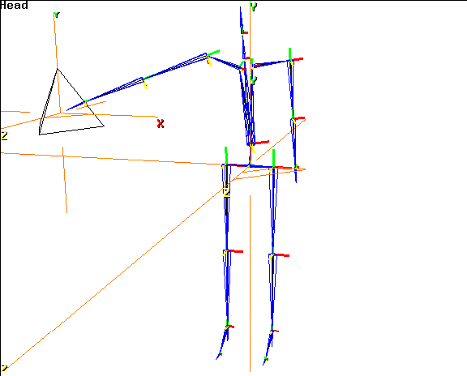

[N-World Contents] [Book Contents] [Prev] [Next] [Index]
Walk Cycle Enhancements
This chapter describes some additional N-Dynamics operations that can be performed in conjunction with animation techniques already described.
In this Chapter
You'll learn how to :
The N-Dynamics operation used to perform these tasks are also described in the Skeletal Animation System Reference Guide. For a more in-depth discussion of the parameters for these dynamic operations, refer to that guide.
Avoiding Obstacles
Animating a Skeleton along a Wire
When you animate a skeleton in the SAS, each joint on the skeleton moves through space, tracing a virtual path.
The SAS lets you optionally generate a wire along that path as the skeleton is animated; you can then bend or twist that wire, and reanimate the skeleton, making the same joint follow the modified wire.
This is a highly visual method for modifying an animation that you may want to modify in some minor way-such as making a skeleton step over an obstacle in its path.
Animating a skeleton along a wire (or a trajectory) is typically a multi-step process:
Note that the wire or trajectory you animate the joint along does not have to be generated from the animation of a skeleton; in fact, you can make the selected joint follow any wire or trajectory in N-Geometry, as described in the section below "Animating a Skeleton along a Trajectory," on page 8-10.
Creating the Wire
The Make Wire from Joint Motion operation creates a wire from the path of a joint through 3D space when it is animated through N-Dynamics.
This operation gives you a visual reference for a joint's position over time. You can then change the shape of the wire and reanimate the skeleton using that modified wire as a "constraint," as described below.
Try this:
1. Load the following script:
/usr/local/ngc/demo/scripts/make-wire-from-node
- There are five channels in this script:
- The first channel, Set View, places the camera appropriately.
- The second channel, Read Acclaim Data, specifies which skeleton should be animated and which Acclaim motion capture file should be used to animate that skeleton.
- The third channel, Update Skeleton, applies the motion capture data to the specified skeleton.
- The fourth channel, Make Wire from Joint Motion, creates a wire based on the movement of a specified joint on a skeleton (typically the one you're animating).
- The fifth channel, Make Visible, makes the obstacle in the skeleton's path visible.
- At the end of each frame a wire segment is drawn from the position of the selected joint at the previous frame to its position at the current frame.
2. (CLICK-L) on Animate in N-Dynamics.
- The following dialog box appears:
Figure 8.1 Specify a name for the wire that is generate-it's a normal geo object
3. Enter a name for the wire that will be generated and (CLICK-L) on done.
- For this example, call it "motion-from-leg".
- The generated wire is just like a wire you'd encode by hand in N-Geometry; give it a name that will make it easy to recognize if you want to use it again later.
- For this script, we had to select the joint to generate the wire and create a IK Set for the dynamic IK operation to use.
- Note. When generating a wire, it's generally a good idea to select a joint that is limited in rotations to a single axis, such as a wrist or ankle (rather than a finger or toe). A joint restricted to rotation around a single axis produces a straighter wire, which is easier to control.
- The script begins to animate and creates a wire from the specified joint.
Figure 8.2 Making a wire from a joint's motion
- At this point, you have a wire that shows the path of the joint at the bottom of the right leg over the course of the animation.
- However, around frame 82, the skeleton's foot hits the obstacle we've placed in its path. What we want to do is change the shape of the wire, then reanimate the skeleton using the wire as a "guide."
- Note. The generated wire is divided into a number of segments; each segment represents the motion of the joint from one frame to the next.
4. Truck the camera in close to the obstacle.
Figure 8.3 Close up of the wire and obstacle
5. Collect several points along the wire near where it intersects with the obstacle.
6. (SHIFT-L) on the collection.
7. (CLICK-M) on Axis Move, and specify the "Y" axis from the menu that appears.
8. Move the mouse left and right until the section of wire clears the obstacle with enough room left for the toes.
- It should look something like this:
Figure 8.4 Modified wire
- You may have to select a move a few points along the wire to smooth it a bit.
- Note. If you change the length of a segment significantly, then reanimate the skeleton using that wire, it can cause a slight pause or jump in the motion (since the joint jumps from point to point at each frame). Try to keep the size of individual segments close to their original length for smoother motion.
9. Deactivate the Make Wire from Joint Motion channel.
- Move the mouse over the channel and press the "a" key on the keyboard to toggle the active status of the channel. The text should turn black to indicate that the channel has been temporarily turned off.
10. Add another channel to the script.
- Move the cursor over the black title bar of the script and press the "s" key to add another channel.
11. (CLICK-M) on the channel.
12. (CLICK-L) on Skeletal Animation.
13. (CLICK-L) on IK Move along Wire.
14. (CLICK-M) on the channel and specify the following parameters:
Using the Generated Wire as a Guide
To animate the skeleton using the newly generated guide wire, you'd make some modifications to your existing script.
Let's load a sample script that we already modified so you can see the changes:
1. Load the following script:
/usr/local/ngc/demo/scripts/IK-move-along-wire
- This script is identical to the "make-wire-from-node" script above, except that it shows the changes you'd make to animate the same ankle joint along the new wire:
2. (CLICK-L) on the Animate button in the N-Dynamics window.
- Note first the changed shape of the wire. When the foot approaches the rock now, it raises up and steps over the obstacle:

Figure 8.5 Animating skeleton along the modified wire
Animating a Skeleton along a Trajectory
Animating a skeletal joint along a trajectory is similar to animating a skeleton along a wire, except you have more control over how fast the joint moves along that trajectory; rather than moving one segment for each frame of animation, the animation of the specified joint is controlled by a curve channel associated with the IK Move along Trajectory operation.
Try this:
1. Load the following script:
/usr/local/ngc/demo/scripts/ik-move-along-trajectory
- This script contains three channels:
2. (CLICK-L) on the Animate button in N-Dynamics.
- The skeleton swings its right arm along the trajectory.
Figure 8.6 Moving a skeletal joint along a trajectory
- Note that the skeleton moves in a linear fashion along the entire length of the trajectory.
3. Look at the IK Move along Trajectory channel in the script.
- The curve data looks like this:
Figure 8.7 Sample curve data for IK Move along Trajectory operation
- This sample curve data goes from 0 to 1; the value specified at any frame indicates the relative position along the trajectory that the joint tries to move to for that frame.
- Try this:
4. Move the cursor over frame 20 of the curve and press the "s" hot key or (CLICK-R) on the channel and Add Cue.
- This inserts a new cue in the curve channel:
Figure 8.8 Adding a new cue
5. (CLICK-M) on the cue.
6. Drag the slider to a value of about .25, then (CLICK-L) on Do it.
- The curve should now look like this:
Figure 8.9 Modified cue value
7. (CLICK-L) on Animate once more in the N-Dynamics window.
- The skeleton animates, but spends the first 20 frames moving from the beginning of the trajectory to a point one-fourth (.25) along its length. In the last 10 frames, it moves from there to the end (specified by the value of 1 in the end cue).
8. (CLICK-L) on Playback.
- You may notice that the transition around the cue is a little bit sudden. You can simply modify the curve treatment for the curve, then reanimate.
9. (CLICK-M) on the curve channel.
10. In the dialog box that appears, (CLICK-L) on the Curve type text box.
11. (CLICK-L) on Slow In/Out, then (CLICK-L) on Do It.
- The curve should now look something like this:
Figure 8.10 The linear curve modified with a slow in/out treatment
- Additional curve treatments are described in more detail in the N-Dynamics Reference Guide.
12. (CLICK-L) on Animate in the N-Dynamics window.
- The skeleton reanimates along the trajectory.
13. (CLICK-L) on Playback.
- You should notice that the movement is slightly smoother, particularly around the area where you inserted the cue.
- You can play with the curve data in some additional ways, then try reanimating and playing your recording back:
Note that this operation can also be used in conjunction with the Make Wire from Joint Motion operation; however, you'll need to use the N-Geometry Copy into Trajectory command on the generated wire, then specify that trajectory as your "guide."
Reaching for an Object
The IK Move to Object operation lets you move a joint on a skeleton to the center of another object.
1. Load the following script:
/usr/local/ngc/demo/scripts/ik-move-to-object
- There are three channels in this script:
2. (CLICK-L) on the Animate button in N-Dynamics.
- In this script, we specified that the hand bone should reach out toward the center of the tetrahedron:

Figure 8.11 IK Move to Object
3. In the script, (CLICK-M) on the middle channel.
- You can see that we specified the following parameters:
Figure 8.12 Specifying parameters for the IK Move to Object operation
- These parameters are described in detail in the Skeletal Animation System Reference Guide. However, you can see that you need to specify which skeleton you are moving, which bone on that skeleton, the IK Set to be used in performing the operation, and the object you are reaching for.
As the script animates, the SAS animates the movement of the specified joint to the specified object.
Modifying the IK Set
If the motion produced by this operation doesn't look quite right, you have several options. Perhaps the easiest is to change the IK Set governing the IK Move.
4. (CLICK-L) on points in the element sensitivity menu.
5. (SHIFT-L) on the joint at the tip of the right hand.
6. (CLICK-L) on IK Set.
7. Modify the IK Set to your liking (as described in the section"Defining an IK Set," on page 6-8.
8. Reanimate the skeleton using the modified IK Set.
- You can compare the two animations using the various options described when you (CLICK-R) on the Playback button in the N-Dynamics window.
Modifying the DOF Limits
If the motion looks pretty good, but you are getting some rotations that you don't like, you might try modifying the DOF limits for one or more bones.
For example, if the bones you want to rotate are rotating, just not far enough, you might want to simply change their limits, then try to reanimate.
Reaching for a Part on an Object
The IK Move to Part operation is similar to the IK Move to Object command described earlier, except in this case the target of the IK move is a skin part on a specified object.
1. Load the following script:
/usr/local/ngc/demo/scripts/ik-move-to-part
- There are three channels in this script:
2. (CLICK-L) on the Animate button in N-Dynamics.
- In this script, we specified that the hand bone should reach up and touch the face part (a face part we defined on the skin attached to the skeleton):
Figure 8.13 IK Move to Part
3. In the script, (CLICK-M) on the second channel.
- You can see that we specified the following parameters:
Figure 8.14 Specifying parameters for the IK Move to Part operation
- These parameters are described in detail in the Skeletal Animation System Reference Guide. However, you can see that you need to specify which skeleton you are moving, which bone on that skeleton, the IK Set to be used in performing the operation, and the part you are reaching for.
Modifying the IK Set
If the motion produced by this operation doesn't look quite right, you have several options. Perhaps the easiest is to change the IK Set governing the IK Move.
4. (CLICK-L) on points in the element sensitivity menu.
5. (SHIFT-L) on the joint at the tip of the right hand.
6. (CLICK-L) on IK Set.
- The IK set for this IK operation looks like this:
Figure 8.15 Sample IK Set for the IK Move to Part operation
- Note. A better IK set produces better motion!
- Note. Any type of IK operation in which the hand goes above usually require that the shoulder be able to rotate in the X, Y, and Z; be sure to allow for these rotations in the IK Set if you're performing such an IK move.
- You can modify the IK Set to your liking (as described in the section"Defining an IK Set," on page 6-8.
Modifying the DOF Limits
If the motion looks pretty good, but you are getting some rotations that you don't like, you might try modifying the DOF limits for one or more bones.
For example, if the bone you want to rotate are rotating, just not far enough, you might want to simply change their limits, then try to reanimate.
Congratulations!
The techniques you've learned in this chapter offer some interesting techniques for modifying existing motion-from creating and modifying wires to reaching for an object while on the run.
[N-World Contents] [Book Contents] [Prev] [Next] [Index]
 Another fine product from Nichimen documentation!
Another fine product from Nichimen documentation!
Copyright © 1996, Nichimen Graphics Corporation. All rights
reserved.